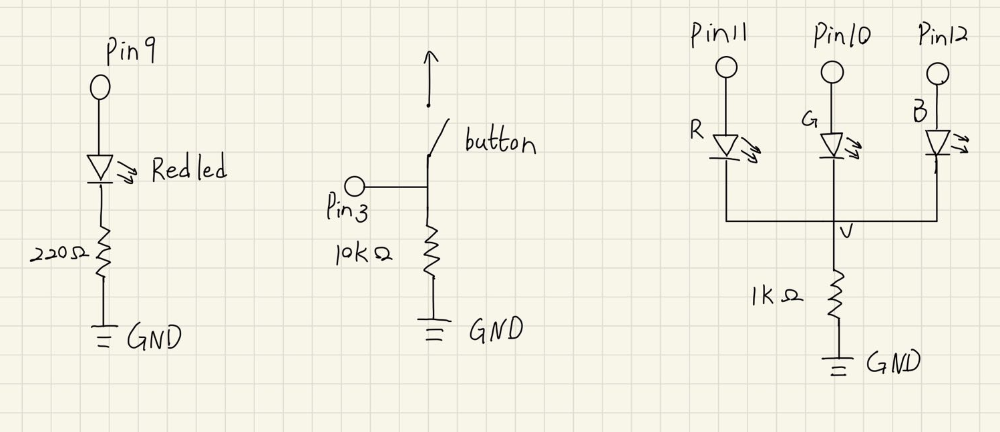
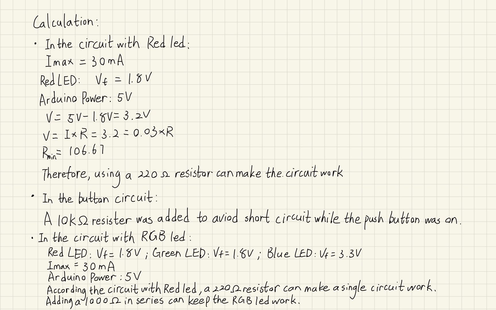

Congyi's Assignment 2!
A schematic, circuit, code that uses two LEDs, and a button to make the LEDs fade
Components in the circuit:
1 red LED
1 RGB LED
1 220 ohm resistor
1 10k ohm resistor
1 1k ohm resistor
9 wires
1 press button
Schematic:


Circuit:

The circuit was implemented on my breadboard. Input Wires are pluged into pin 3, 9, 10, 11, 12. Output wires are all pluged into the ground.
Firmware:
int led = 9; // the RED LED is attached to pin 9
int Blue = 12; // the Blue in RGB LED is attached to pin 12
int Green = 10; // the Green in RGB LED is attached to pin 10
int Red = 11; // the Red in RGB LED is attached to pin 11
int brightness = 0; // how bright the LED is
int fadeAmount = 3; // how many points to fade the LED by
const int buttonPin = 2; // set push button on pin 2
// the setup routine runs once when you press reset:
void setup() {
// declare RED LED to be an output:
pinMode(led, OUTPUT);
// declare Red in RGB LED to be an output:
pinMode(Red, OUTPUT);
// declare Green in RGB LED to be an output:
pinMode(Green, OUTPUT);
// declare Blue in RGB LED to be an output:
pinMode(Blue, OUTPUT);
// declare push button to be an input:
pinMode(buttonPin, INPUT);
}
// the loop routine runs over and over again forever:
void loop() {
// read the status of the push button
int buttonState = digitalRead(buttonPin);
// condition which push button is on
if (buttonState == HIGH) {
// repeats as long as the push button is on
while (buttonState == HIGH) {
// a for loop for increasing the brightness of RED led:
for (int i = 0; i < 100; i++){
// set the brightness of the RED led
analogWrite(led, i);
// wait for 10 milliseconds
delay(10);
}
// a for loop for decreasing the brightness of RED led:
for (int i = 100; i >=0; i--){
// set the brightness of the RED led
analogWrite(led, i);
// wait for 10 milliseconds
delay(10);
}
// set the brightness of green in RGB led:
analogWrite(Green, brightness);
// change the brightness for next time through the loop:
brightness = brightness + fadeAmount;
// reverse the direction of the fading at the ends of the fade:
if (brightness <= 0 || brightness >= 255) {
fadeAmount = -fadeAmount;
// wait for 30 milliseconds to see the dimming effect
delay(30);
}
// Reread the status of the button
buttonState = digitalRead(buttonPin);
}
// condition which push button is on
} else {
// turn off the RED led
digitalWrite(led, LOW);
// turn off the green in RGB led
digitalWrite(Green, LOW);
}
}
Circuit's Operation GIF:

Here is all the documentation for assignment 2!